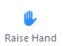
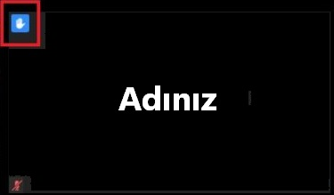
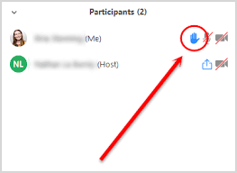
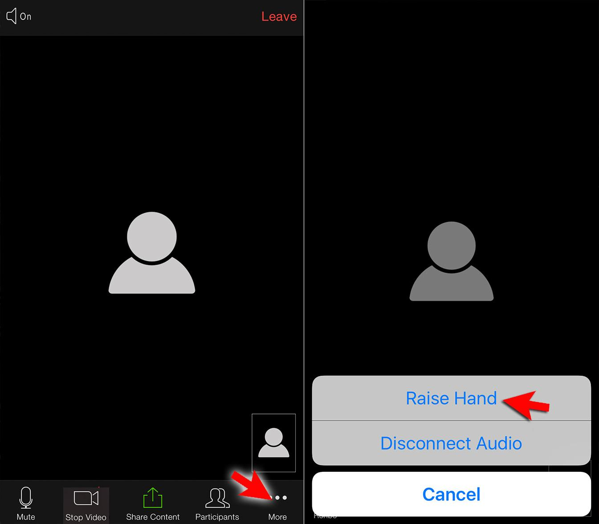
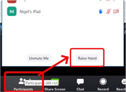
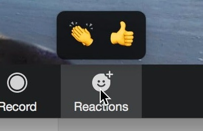
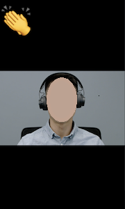

EN | TR
Raise Hand (el kaldır), Zoom toplantısı sırasında idareciye söz hakkı istediğinizi bildirir.
Raise Hand yaptığınızda, görüntünüzün üst sol köşesinde mavi bir el görünür

Ayrıca Participants (katılımcılar) listesinde başlara alınırsınız.

Şöyle basın: Participants (üst köşede), sonra Raise Hand
Ayrıca bakın: Raise Hand hakkında nelere dikkat etmek lazım?
Şöyle basın: More (alt köşede), sonra Raise Hand
iPhone genelde şöyle görünür:

Android (Samsung) genelde şöyle görünür:

Ayrıca bakın: Raise Hand hakkında nelere dikkat etmek lazım?
Şöyle basın: Participants (genelde altta bulunur), sonra Raise Hand (açılan menünün alt köşesinde)

Ayrıca bakın: Raise Hand hakkında nelere dikkat etmek lazım?
1. Raise Hand'i kullandıktan sonra eğer size söz hakkı verilmezse ya da artık söz hakkı istemiyorsanız Lower Hand (el indir) yapın. Bunu Raise Hand yaptığınız yerden yapabilirsiniz. Lower Hand yapmayı unutursanız host sizin yerinize yapabilir.
2. Raise Hand, şu değildir:


Bu özellik Applause (alkış) özelliğidir. Sizi Participants listesinin başına getirmez ve birkaç saniye sonra kendiliğinden kaldırılır. Bu nedenle Applause yerine Raise Hand'i kullanmanız önerilir.
3. Host ya da co-host iseniz Raise Hand'i kullanamıyorsunuz. Dolayısıyla istisna olarak Raise Hand yerine Applause kullanmayı deneybilirsiniz.
Raise Hand kullanılmazsa soru-cevap müzakereleri zor yürüyebilir. Genelde idareci tek seferde en fazla 25 kullanıcı görebilir. Dolayısıyla 25'ten fazla kullanıcının bağlandığı toplantılarda idareci el kaldırdığınızı görmeyebilir.
Ayrıca telefonla bağlananlar ya da kamera görüntüsünü açamayanlar hiçbir şekilde görünmez.
Raise Hand kullanılırsa 100'den fazla kullanıcı bağlandığında bile soru-cevap müzakeresi yürütülebilir. Raise Hand yapanlar Participants listesinin başına getirildiği için, idareci bu listeye bakarak söz hakkı verebilir.
Ayrıca telefonla bağlananlar ya da kamera görüntüsünü açamayanlar bile söz hakkı isteyebilir.
Son güncelleme: 2020-05-02 12:57 UTC